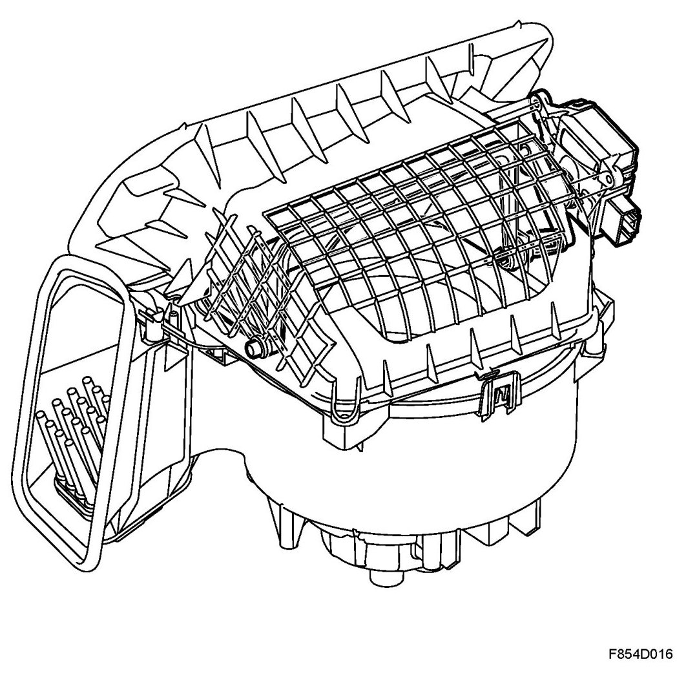
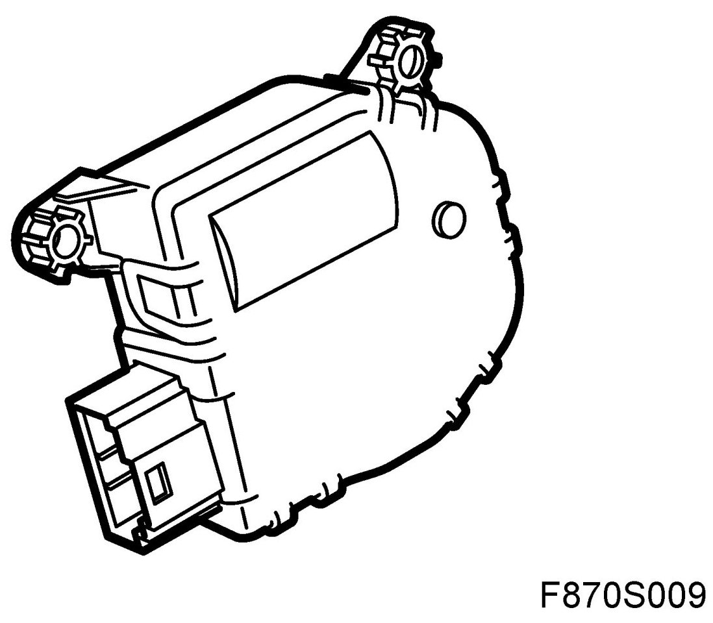
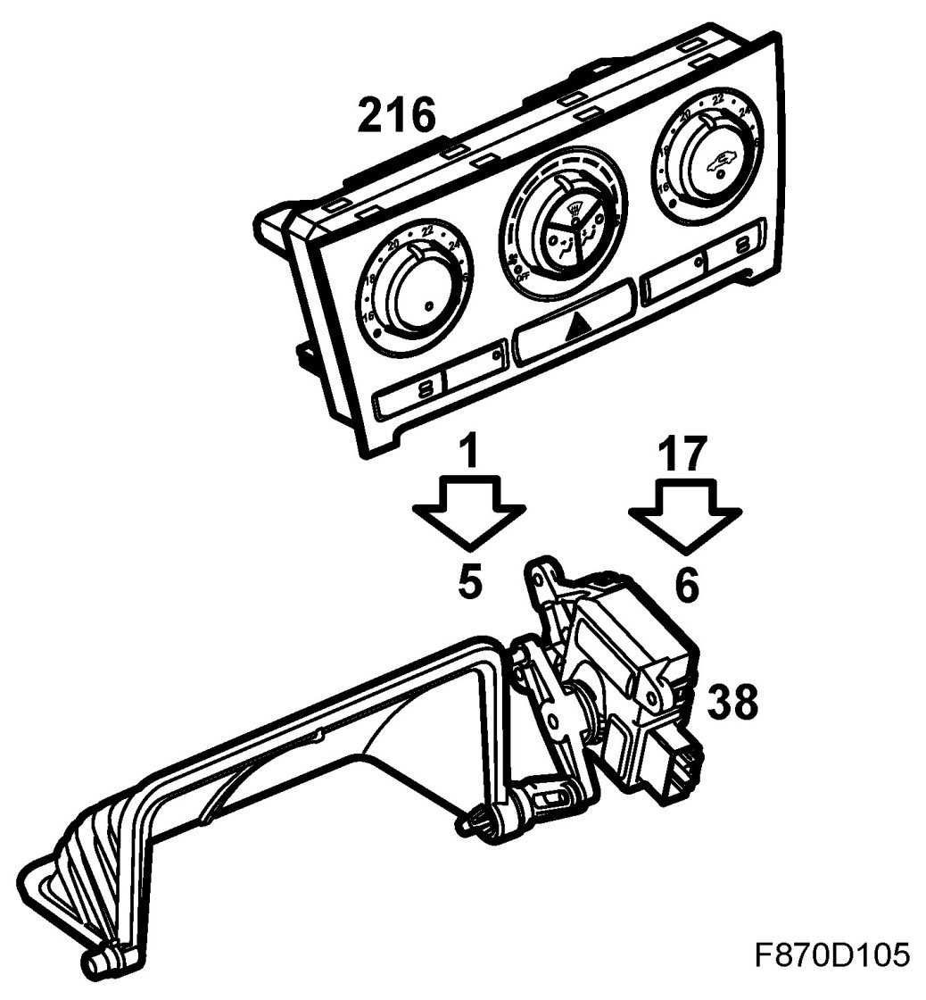
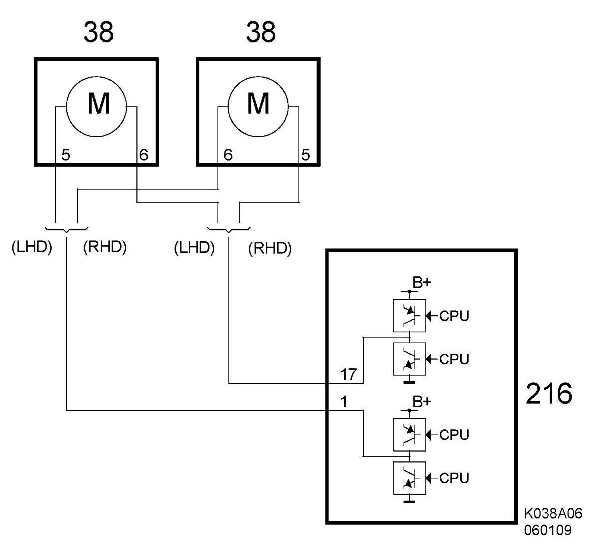

Motor, Air Recirculation Flap (38), ACC
Motor, Air Recirculation Flap (38), ACC
Location
Motor, air recirculation flap (38).
Main task
T he motor is connected with linkage which controls the air recirculation flap. The flap regulates air flow to the fan so that the air is retrieved from outside the cabin or from inside the cabin; there is no intermediate setting.

Type
The air recirculation flap has a DC motor. The ACC unit reverses output polarity in order to change the direction of motor rotation.

Connect
ACC
The motor is connected to ACC unit pins 1 (K32) and 17 (K32). The output polarity is reversed in order to change motor rotation direction. The ACC unit applies a B+ feed on pin 1 and grounds pin 17 in order to operate the motor for fresh air setting and conversely in order to operate the motor for cabin air retrieval.


Connection, motor/ACC unit for LHD: ACC unit pin 1 towards motor pin 5 ACC unit pin 17 towards motor pin 6.
Connection, motor/ACC unit for RHD car: ACC unit pin 1 towards motor pin 6 ACC unit pin 17 towards motor pin 5.